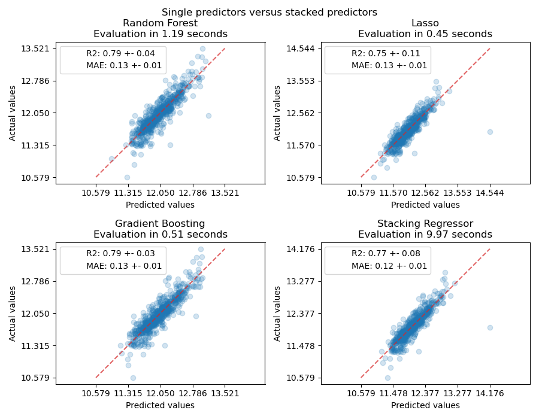
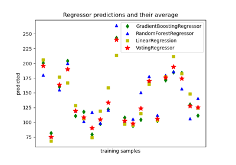
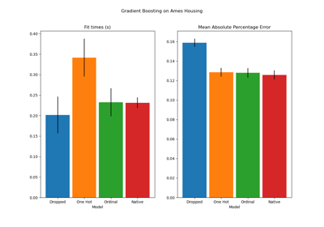

Combine predictors using stacking#
Stacking refers to a method to blend estimators. In this strategy, some estimators are individually fitted on some training data while a final estimator is trained using the stacked predictions of these base estimators.
In this example, we illustrate the use case in which different regressors are stacked together and a final linear penalized regressor is used to output the prediction. We compare the performance of each individual regressor with the stacking strategy. Stacking slightly improves the overall performance.
# Authors: Guillaume Lemaitre <g.lemaitre58@gmail.com>
# Maria Telenczuk <https://github.com/maikia>
# License: BSD 3 clause
Download the dataset#
We will use the Ames Housing dataset which was first compiled by Dean De Cock and became better known after it was used in Kaggle challenge. It is a set of 1460 residential homes in Ames, Iowa, each described by 80 features. We will use it to predict the final logarithmic price of the houses. In this example we will use only 20 most interesting features chosen using GradientBoostingRegressor() and limit number of entries (here we won’t go into the details on how to select the most interesting features).
The Ames housing dataset is not shipped with scikit-learn and therefore we will fetch it from OpenML.
import numpy as np
from sklearn.datasets import fetch_openml
from sklearn.utils import shuffle
def load_ames_housing():
df = fetch_openml(name="house_prices", as_frame=True)
X = df.data
y = df.target
features = [
"YrSold",
"HeatingQC",
"Street",
"YearRemodAdd",
"Heating",
"MasVnrType",
"BsmtUnfSF",
"Foundation",
"MasVnrArea",
"MSSubClass",
"ExterQual",
"Condition2",
"GarageCars",
"GarageType",
"OverallQual",
"TotalBsmtSF",
"BsmtFinSF1",
"HouseStyle",
"MiscFeature",
"MoSold",
]
X = X.loc[:, features]
X, y = shuffle(X, y, random_state=0)
X = X.iloc[:600]
y = y.iloc[:600]
return X, np.log(y)
X, y = load_ames_housing()
Make pipeline to preprocess the data#
Before we can use Ames dataset we still need to do some preprocessing. First, we will select the categorical and numerical columns of the dataset to construct the first step of the pipeline.
from sklearn.compose import make_column_selector
cat_selector = make_column_selector(dtype_include=object)
num_selector = make_column_selector(dtype_include=np.number)
cat_selector(X)
['HeatingQC', 'Street', 'Heating', 'MasVnrType', 'Foundation', 'ExterQual', 'Condition2', 'GarageType', 'HouseStyle', 'MiscFeature']
num_selector(X)
['YrSold', 'YearRemodAdd', 'BsmtUnfSF', 'MasVnrArea', 'MSSubClass', 'GarageCars', 'OverallQual', 'TotalBsmtSF', 'BsmtFinSF1', 'MoSold']
Then, we will need to design preprocessing pipelines which depends on the ending regressor. If the ending regressor is a linear model, one needs to one-hot encode the categories. If the ending regressor is a tree-based model an ordinal encoder will be sufficient. Besides, numerical values need to be standardized for a linear model while the raw numerical data can be treated as is by a tree-based model. However, both models need an imputer to handle missing values.
We will first design the pipeline required for the tree-based models.
from sklearn.compose import make_column_transformer
from sklearn.impute import SimpleImputer
from sklearn.pipeline import make_pipeline
from sklearn.preprocessing import OrdinalEncoder
cat_tree_processor = OrdinalEncoder(
handle_unknown="use_encoded_value",
unknown_value=-1,
encoded_missing_value=-2,
)
num_tree_processor = SimpleImputer(strategy="mean", add_indicator=True)
tree_preprocessor = make_column_transformer(
(num_tree_processor, num_selector), (cat_tree_processor, cat_selector)
)
tree_preprocessor
Then, we will now define the preprocessor used when the ending regressor is a linear model.
from sklearn.preprocessing import OneHotEncoder, StandardScaler
cat_linear_processor = OneHotEncoder(handle_unknown="ignore")
num_linear_processor = make_pipeline(
StandardScaler(), SimpleImputer(strategy="mean", add_indicator=True)
)
linear_preprocessor = make_column_transformer(
(num_linear_processor, num_selector), (cat_linear_processor, cat_selector)
)
linear_preprocessor
Stack of predictors on a single data set#
It is sometimes tedious to find the model which will best perform on a given dataset. Stacking provide an alternative by combining the outputs of several learners, without the need to choose a model specifically. The performance of stacking is usually close to the best model and sometimes it can outperform the prediction performance of each individual model.
Here, we combine 3 learners (linear and non-linear) and use a ridge regressor to combine their outputs together.
Note
Although we will make new pipelines with the processors which we wrote in the previous section for the 3 learners, the final estimator
RidgeCV()does not need preprocessing of the data as it will be fed with the already preprocessed output from the 3 learners.
from sklearn.linear_model import LassoCV
lasso_pipeline = make_pipeline(linear_preprocessor, LassoCV())
lasso_pipeline
from sklearn.ensemble import RandomForestRegressor
rf_pipeline = make_pipeline(tree_preprocessor, RandomForestRegressor(random_state=42))
rf_pipeline
from sklearn.ensemble import HistGradientBoostingRegressor
gbdt_pipeline = make_pipeline(
tree_preprocessor, HistGradientBoostingRegressor(random_state=0)
)
gbdt_pipeline
from sklearn.ensemble import StackingRegressor
from sklearn.linear_model import RidgeCV
estimators = [
("Random Forest", rf_pipeline),
("Lasso", lasso_pipeline),
("Gradient Boosting", gbdt_pipeline),
]
stacking_regressor = StackingRegressor(estimators=estimators, final_estimator=RidgeCV())
stacking_regressor
Measure and plot the results#
Now we can use Ames Housing dataset to make the predictions. We check the performance of each individual predictor as well as of the stack of the regressors.
import time
import matplotlib.pyplot as plt
from sklearn.metrics import PredictionErrorDisplay
from sklearn.model_selection import cross_val_predict, cross_validate
fig, axs = plt.subplots(2, 2, figsize=(9, 7))
axs = np.ravel(axs)
for ax, (name, est) in zip(
axs, estimators + [("Stacking Regressor", stacking_regressor)]
):
scorers = {"R2": "r2", "MAE": "neg_mean_absolute_error"}
start_time = time.time()
scores = cross_validate(
est, X, y, scoring=list(scorers.values()), n_jobs=-1, verbose=0
)
elapsed_time = time.time() - start_time
y_pred = cross_val_predict(est, X, y, n_jobs=-1, verbose=0)
scores = {
key: (
f"{np.abs(np.mean(scores[f'test_{value}'])):.2f} +- "
f"{np.std(scores[f'test_{value}']):.2f}"
)
for key, value in scorers.items()
}
display = PredictionErrorDisplay.from_predictions(
y_true=y,
y_pred=y_pred,
kind="actual_vs_predicted",
ax=ax,
scatter_kwargs={"alpha": 0.2, "color": "tab:blue"},
line_kwargs={"color": "tab:red"},
)
ax.set_title(f"{name}\nEvaluation in {elapsed_time:.2f} seconds")
for name, score in scores.items():
ax.plot([], [], " ", label=f"{name}: {score}")
ax.legend(loc="upper left")
plt.suptitle("Single predictors versus stacked predictors")
plt.tight_layout()
plt.subplots_adjust(top=0.9)
plt.show()

The stacked regressor will combine the strengths of the different regressors. However, we also see that training the stacked regressor is much more computationally expensive.
Total running time of the script: (0 minutes 25.247 seconds)
Related examples

Plot individual and voting regression predictions

Categorical Feature Support in Gradient Boosting